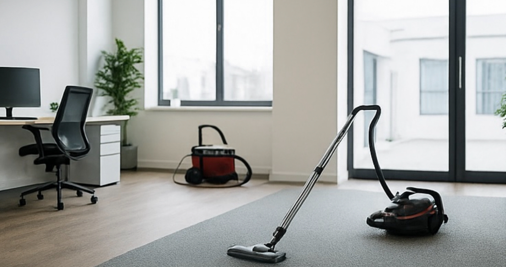

合同会社Luce（ルーチェ）は、 大阪市を中心にマンション清掃・ 共用部清掃・日常清掃を行う 清掃会社です。
エントランス・廊下・階段・ エレベーターホール・ゴミ置き場など、 建物の美観維持を目的とした 清掃を丁寧に行います。
「見えない部分こそ丁寧に」をモットーに、 建物の価値を守る高品質な清掃サービスを ご提供しております。
マンション・共用部清掃専門スタッフが、 建物に合わせた最適な清掃を行います。
大阪エリア中心だからこそ、 スピーディーな対応が可能です。
週1回〜毎日清掃まで、 物件に応じた最適なプランをご提案します。
清掃に関するご相談はお気軽にお問い合わせください。
お問い合わせはこちら